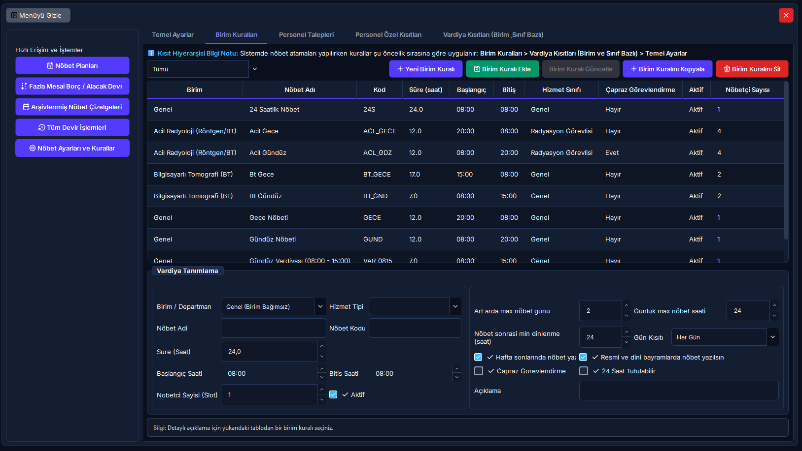

Departman Nöbet Slotları, Akıllı Saat Hesabı & Kural Kopyalama
Departmanların (Acil, USG, BT, MR) çalışma vardiyalarını, nöbetçi sayılarını, otomatik hesaplanan akıllı bitiş saatlerini ve birimler arası vardiya aktarımını bu ekrandan yönetebilirsiniz.
Hızlı Reçete: Departman Vardiya Slotlarını Tanımlama ve Çoğaltma
Vardiya slot açma, otomatik saat tamamlama ve birim kuralı kopyalama
Departmanın gece, gündüz ve hafta sonu ihtiyaç duyduğu nöbetçi pozisyonlarının eksiksiz sisteme tanıtılması.
Birim seçin, başlangıç saatini ve süreyi girin (bitiş saati otomatik dolar), nöbetçi sayısını belirleyip [Birim Kuralı Ekle]'ye basın.
Nöbet dağıtım motoru bu slotları doldurmak için personel atar. [+ Birim Kuralını Kopyala] butonu ile aynı şablon diğer birimlere saniyeler içinde kopyalanabilir.
no-id
[+ Birim Kuralını Kopyala] butonunu kullandığınızda, Hedef Birimde daha önce tanımlanmış olan mevcut tüm nöbet slotları tamamen silinir ve kaynak birimdeki slotlar sıfırdan oluşturulur. Yanlışlıkla birimin var olan slotlarını kaybetmemek için kopyalama öncesinde hedef birimi mutlaka kontrol ediniz.
07.2 Birim Kuralları ve Slotlar 5N1K Bileşen Çözümleme Tablosu
Birim Kuralları ve Nöbet Slotları Ekranı

Adım Adım Yeni Birim Slotu Açma ve Kopyalama
- [Birim Kuralları] sekmesinde sol üstten ilgili departmanı (örn: Acil Radyoloji) seçin.
- Alt kısımdaki Vardiya Tanımlama kutularına gidin:
- Nöbet Adı: "Acil Gece 12s"
- Nöbet Kodu: "ACL_12"
- Başlangıç Saati: 20:00
- Süre (Saat): 12 (Bitiş saati akıllı motor ile otomatik 08:00 olacaktır.)
- Nöbetçi Sayısı: 2
- Geçerli Günler: "Her Gün"
- [Birim Kuralı Ekle] butonuna basın. Yeni slot üstteki tabloda listelenir.
- Aynı kuralları BT servisine de aktarmak isterseniz:
- Üstteki mor [+ Birim Kuralını Kopyala] butonuna basın.
- Kaynak olarak Acil Radyoloji, hedef olarak Bilgisayarlı Tomografi (BT) seçin.
- Onay kutusunda "Evet" diyerek aktarımı tamamlayın.
Sıkça Sorulan Sorular (Birim Slotları)
Bitiş saatini manuel olarak değiştirebilir miyim? ▾
Hayır, bitiş saati kutusu bilerek salt-okunurdur. Hatalı süre veya çakışan vardiya girişlerini engellemek için sistem, başlangıç saati ile süreyi toplayarak bitiş saatini otomatik üretir.
Kural kopyalarken hedef birimdeki eski slotları koruyamaz mıyım? ▾
Kural kopyalama işlevi, hedef birimin şablonunu kaynak birimle tam olarak eşitlemek üzere tasarlanmıştır. Bu sebeple hedef birimin eski slotları silinir. Eğer eski slotları korumak istiyorsanız yeni slotları tek tek eklemeniz önerilir.